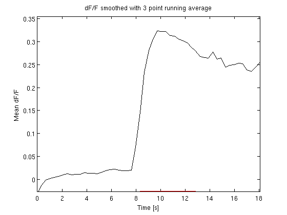

Displaying Data
Once you have the data imported, it's time to take a look at what you have. At this point you have one ROI (the neural tissue) and so you can plot bulk changes in activity across the whole region, you can look at movies of the whole region, etc. In later sections will cover multiple ROIs and extracting neuronal population-level data.
Contents
Response movies
The playMovie function will display to screen a movie of an image stack. e.g. playMovie(data(3).imageStack). Also, make sure you try:
>> playMovie({data(1).imageStack,data(2).imageStack})
and
>> playMovie({data(1).imageStack;data(2).imageStack})
The response time-course
To plot the mean evoked dF/F you can do:
cd ~/work/Matlab_Scripts/ImagingAnalysis/examples/TSeries-02032010-1558-002 load exampleData responseTimeCourse(exampleData(1))
This shows you the dF/F time-course. The red bar is the stimulus period. Running responseTimeCourse with an output argument returns the data used to make the plot.
In preparations where signal to noise is low and there may be motion it can be hard to tell if you really have a response or from which regions of the tissue the response is arising. The responseMovie function can be used to explore the response in more detail.